3Inicio
Buscador
Buscador de Lugares
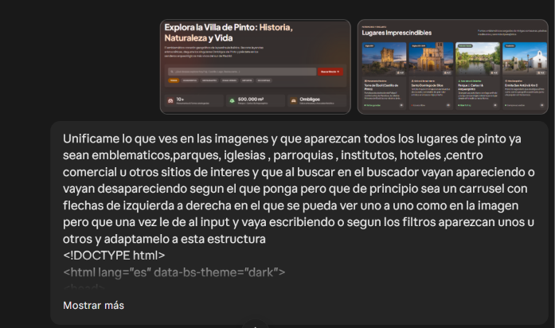
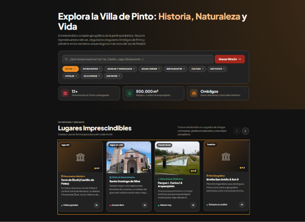

Carlos Sánchez García · 2.º DAM · 2026/2027
Buscador de Lugares
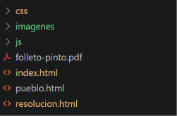
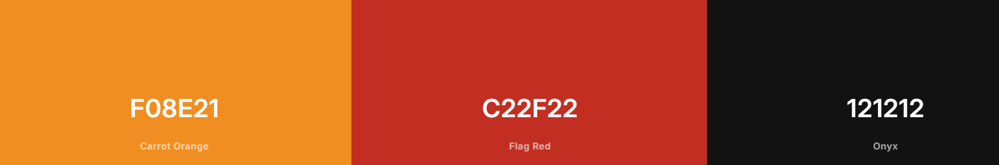
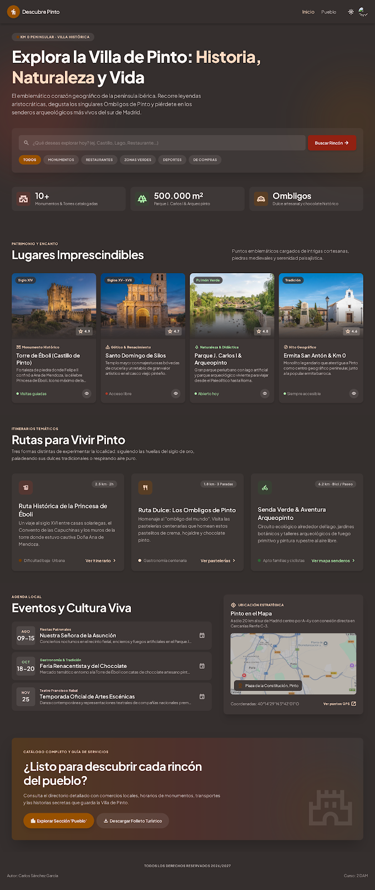
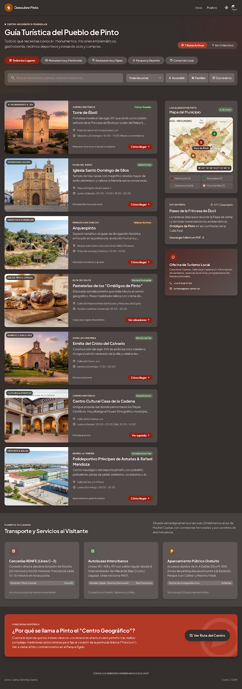
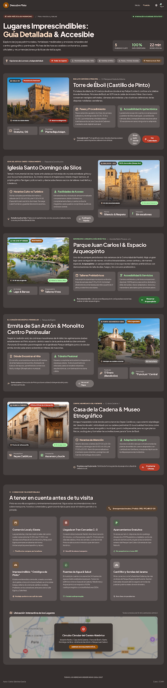
El menú de navegacion
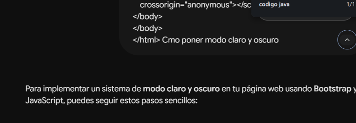
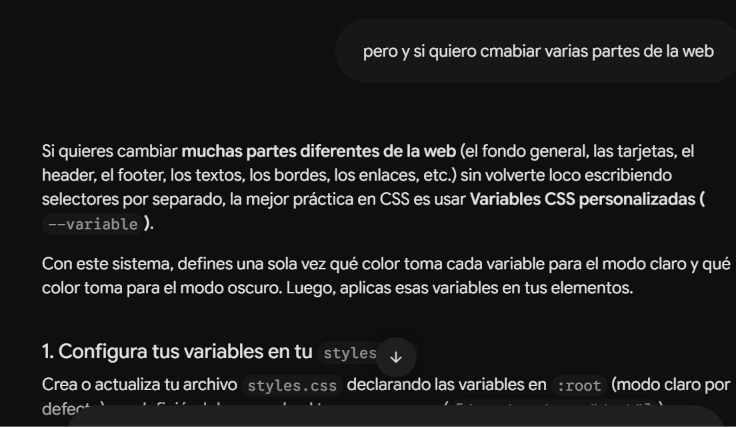
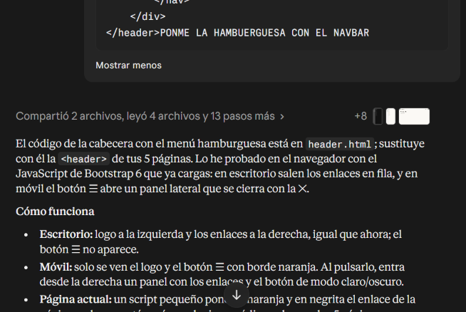
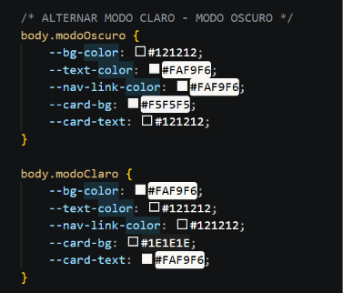
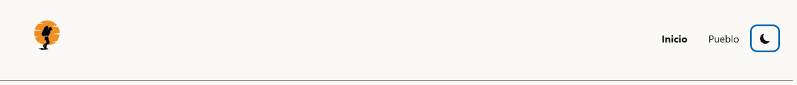
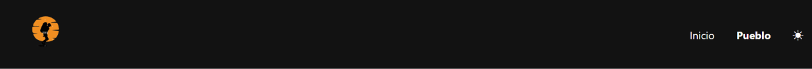
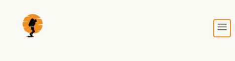
Buscador de Lugares


El folleto y continuación a otra página
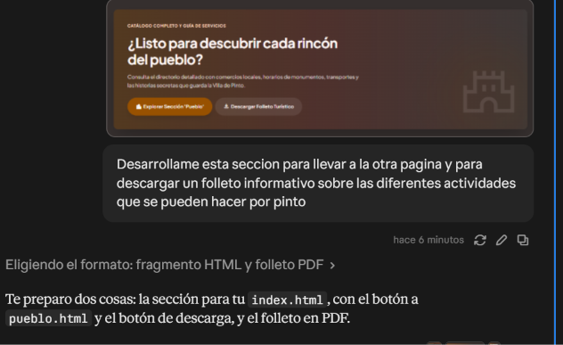
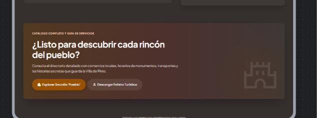
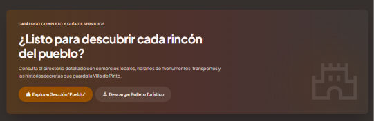

Mapa de Busqueda
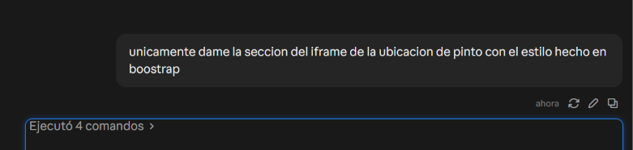
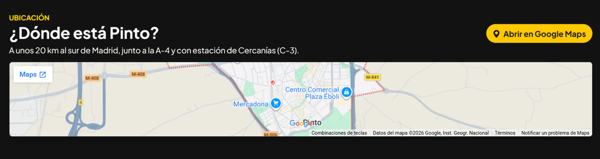
Diseña tu ruta
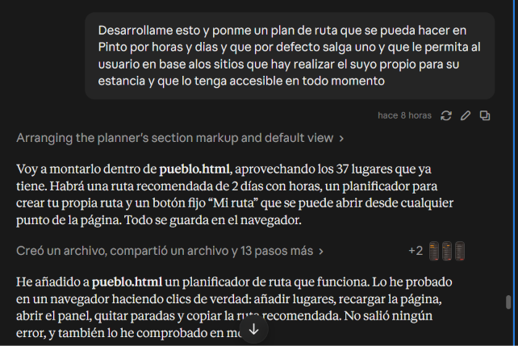
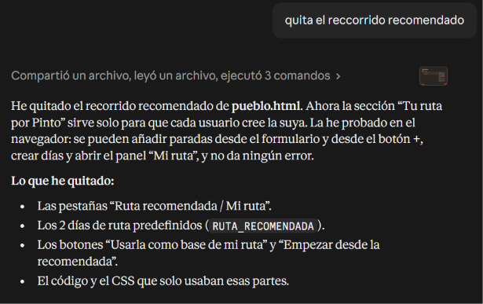
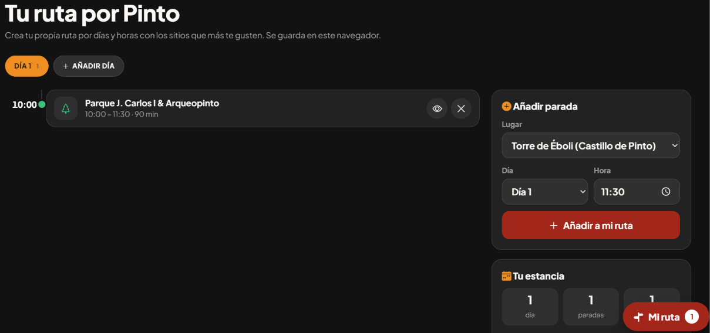
Mirar las rutas del transporte público
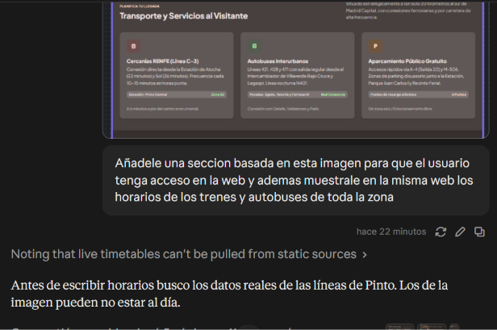
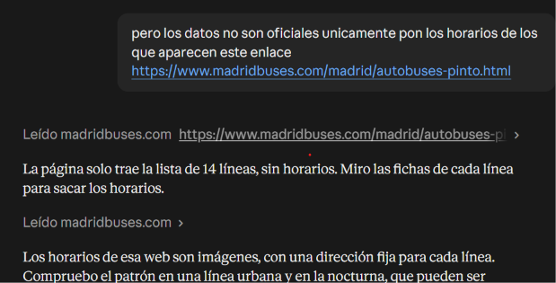
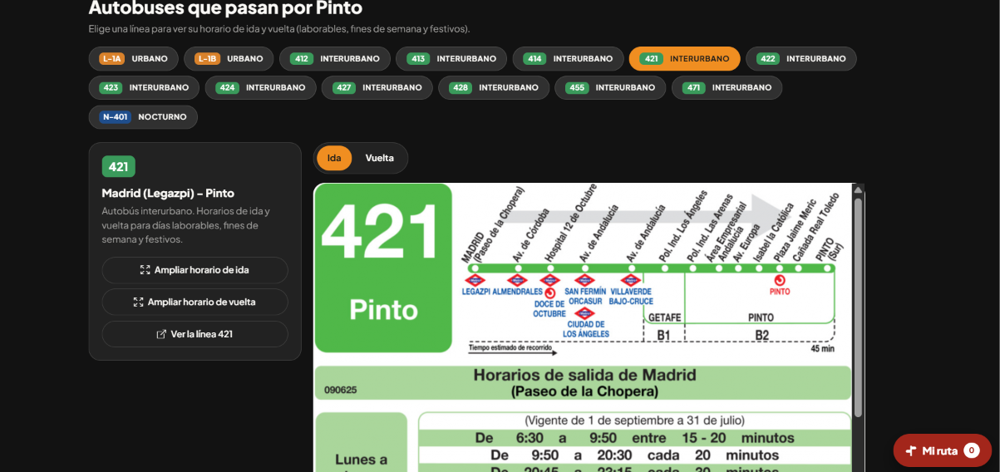
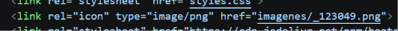
Antes de desplegar la aplicación a GitHub Pages, tuve que encargarme de eliminar el elemento raíz de las rutas hacia imágenes o recursos, ya que en al desplegar unicamente permite tener alojado algo como imagenes/foto1.jpg y no /imagenes/foto1.jpg